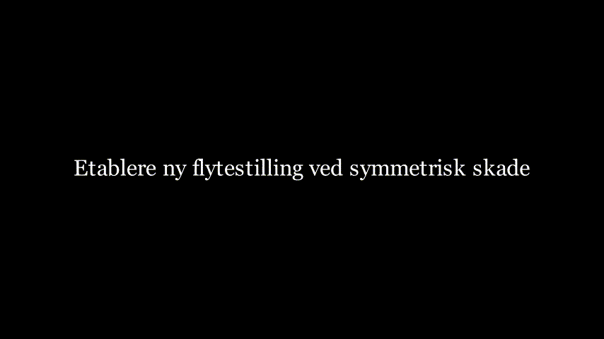
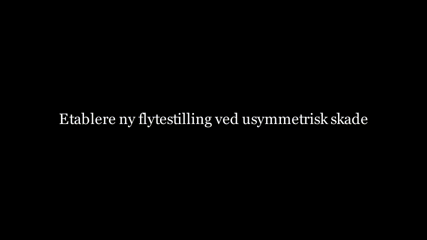

Etter denne modulen skal studenten kunne:
| Symbol | Betydning | Enhet |
|---|---|---|
| L | Lengde | m |
| B | Bredde | m |
| D | Dybde | m |
| T | Intakt dypgang | m |
| TS | Symmetrisk skadet dypgang | m |
| ∇ | Intakt volumdeplasement | m³ |
| ∇S | Skadet volumdeplasement | m³ |
| IWL | Annet arealmoment for vannlinjearealet (intakt) | m⁴ |
| IWLS | Annet arealmoment for vannlinjearealet (skadet) | m⁴ |
| IF | Annet arealmoment for vannlinjearealet om LCF (intakt) | m⁴ |
| IFS | Annet arealmoment for vannlinjearealet om LCF (skadet) | m⁴ |
| KB | Baseline til oppdriftssenter | m |
| BM | Metasentrisk radius | m |
| GM | Metasentrisk høyde | m |
| LCB | Langskips oppdriftssenter | m |
| LCF | Langskips flotasjonssenter | m |
| ta | Akterlig trimendring | m |
| tf | Forlig trimendring | m |
| TA | Dypgang ved AP | m |
| TF | Dypgang ved FP | m |
Animasjon: Oppbygging av lekterens hoveddimensjoner.
Lekteren har i initial kondisjon (før skade) følgende opplysninger oppgitt:

Animasjon: Intakt hydrostatikk - volumdeplasement
$ = L B T $
$ = $
$ BM_T = ,BM_L = $
Mini-sjekk:

Animasjon: Parallell nedsynking til skadet dypgang TS.
Denne fasen fastsetter ny symmetrisk skadet dypgang før eventuelle trimeffekter legges til.
For en rektangulær lekter med en skadet avdeling blir effektiv oppdriftsgivende lengde (L − ld).
Volumdeplasementet forblir konstant i tapt oppdriftsmethoden:
$ L B T = (L-l_d) B T_S $
Ligningen over løses med hensyn på TS, og vi finner ny dypgang i skadet tilstand:
$ T_S = T $
Kontroller deretter:
$ _S = $
Eksempel: lekter med 3 like store avdelinger (midtre avdeling skadet)
$ T_S = T = = 4.50 $
$ _S = = L B T = 60 = 2160 $
Kontroll:
Vi skal her se på hva som skjer med de hydrostatiske verdiene KB, AWL og BMT etter skade

Animasjon: Vertikal forskyvning av oppdriftssenteret - KBS etter skade.
For en rektangulær lekter er oppdriftssenteret i skadet tilstand:
$ KB_S = $

Animasjon: Reduksjon av tverrskips metasenterradius BMTS på grunn av redusert vannlinjeareal.
Skadet vannlinjeareal uttrykt ved skadet lengde ld:
$ A_{WL_S} = (L-l_d)B $
For en rektangulær vannlinje blir tilhørende annet arealmoment:
$ I_{WL_S} = $
$ BM_{T_S} = ,BM_{L_S} = $
Basert på hydrostatikken i skadet tilstand beregnes ny GM: $ GM_S = KB_S + BM_{T_S} - KG $
Mini-sjekk:
Vi skal her se på hva som skjer med de hydrostatiske verdiene LCB, LCF og BML ved usymmetrisk skade. Med usymmetrisk mener vi at avdelingen som fylles ikke ligger i senter.

Animasjon: Hydrostatikk ved usymmetrisk skade - endring av LCBS, LCFS og BMLS.
LCBS i volumsenter av resterende intakte volumer i skadet tilstand.
LCFS ligger i vannlinjearealets arealsenter i skadet tilstand.
Langskips metasenterradius om flotasjonssenter, LCFS i skadet tilstand:
$ BM_{L_S} = $

Animasjon: Beregning av trimmoment og fordeling i trim ta (akter) og tf (for).
For å beregne den totale trimmen må vi se på trimmomentet forårsaket av $ LCG-LCB_S $
$ l_k = LCG-LCB_S $
$ M_{T} = l_k $
$ t = $
$ MCT_{1cm_S} = $

Figur: Fordeling av total trim om LCFS.
LCFS er rotasjonsaksen som lekteren vil rotere om langskips, og vi får følgende forhold: $ aft =, fore = $
$ t_a = t(), t_f = t() $
$ t_a = ,t_f = $
$ T_A= T_S - ,T_F= T_S + $
ta og tf er her uttrykt i cm, og deles derfor på 100 for å få endelig dypgang uttryk i m.
MERK: Hvis trimmomentet er mot klokken, reverseres fortegnene i likningene under.
$ GM_S > 0 $
$ T_{crit}=(T_A,T_F) < D $
Konklusjon:
Steg 1: Initialt deplasement og oppsett
$ = L B T = 60 = 2160 $
Med ρ = 1.0 t/m3 er initialt deplasement Δ = 2160 t.
Steg 2: Parallell nedsynking løst fra avdelingslengden
For en rektangulær lekter med en fullt skadet langskips avdeling er oppdriftsgivende lengde (L − ld). Likevekt gir:
$ L B T = (L-l_d) B T_S $
$ T_S = T = = 3.1858 $
Anvend bevaring av deplasement for dette oppsettet med tapt oppdrift:
$ _S = = 2160 $
Dermed forblir deplasementet:
$ _S = = 2160 $
Steg 3: Oppdatert hydrostatikk (BMTS, BMLS, GMS)
$ BM_{T_S} = = = 3.519 $
$ BM_{L_S} = = = 972.2 $
$ GM_S = KB_S + BM_{T_S} - KG = 1.62 + 3.519 - 4.20 = 0.939 $
Steg 4: Trim og endelige dypganger
Bruk AP-baserte koordinater med LCG = 30.00 m og LCBS = 29.75 m:
$ M_{trim} = (LCG - LCB_S) = 2160,(30.00 - 29.75) = 540.0 $
Bruk en box-barge-tilnærming for moment til å endre trim 1 cm:
$ MCT_{1cm_S} = = = 350.0 $
$ trim = = = 1.543 = 0.01543 $
Anta trim om LCFS = 30.00 m fra AP (midskips i dette tilfellet), slik at trimkomponentene ta og tf hver blir halvparten av total trim:
$ t_a = = 0.00771 ,t_f = = 0.00771 $
Endelige dypganger:
$ T_F = T_S + t_f = 3.1858 + 0.00771 = 3.1935 $
$ T_A = T_S - t_a = 3.1858 - 0.00771 = 3.1781 $
Steg 5: Akseptkontroll
$ GM_S = 0.939 > 0 $
$ T_{S,} T_F = 3.1935 < D = 6.0 $
| Størrelse | Verdi | Enhet |
|---|---|---|
| Initialt deplasementsvolum ∇ | 2160 | m^3 |
| Lengde på skadet avdeling ld | 3.5 | m |
| Beregnet symmetrisk dypgang TS | 3.1858 | m |
| Skadet deplasementsvolum ∇S | 2160 | m^3 |
| BMTS | 3.519 | m |
| GMS | 0.939 | m |
| Total trim | 0.0154 | m |
| Dypgang ved AP TA | 3.1781 | m |
| Dypgang ved FP TF | 3.1935 | m |
| Akseptstatus | PASS | - |
Merk: - Dette regneeksemplet er bevisst enkelt og bruker box-barge-tilnærminger for å tydeliggjøre framgangsmåten. - I praktiske beregninger må forenklede uttrykk erstattes med hydrostatiske modellresultater for hver mellomliggende dypgang.
Obligatorisk oppgave (separate filer):
Gitt:

Figur: Fem like store vanntette langskips avdelinger, der én avdeling er skadet i regneeksemplet.
Steg 1: Initialt deplasement
$ = L B T = 100 = 7000 $
$ = = 1.025 = 7175 $
Steg 2: Symmetrisk skadet dypgang fra tapt oppdriftsgivende lengde
Lengde på skadet avdeling:
$ l_d = 20.0 ,L_S=L-l_d=80.0 $
Løs likevekt:
$ L B T = (L-l_d) B T_S $
$ T_S = T = = 4.375 $
Bevaring av deplasement:
$ _S = = 7000 ,_S = = 7175 $
Steg 3: Hydrostatiske inndata i skadet tilstand fra avdelingsgeometrien
Gjenværende oppdrifts- og vannplanområder er intervallene [0, 60] og [80, 100] m fra AP.
Langskips tyngdepunkter:
$ LCB_S = LCF_S = = 45.0 $
Skadet annet arealmoment for vannlinjearealet om tverrakse:
$ I_{WL_S}=(80)B^3 = (80)(20^3)=53{,}333.3 $
Skadet annet arealmoment for vannlinjearealet om LCFS:
$ I_{F_S}=+$
med A1 = 60 ⋅ 20 = 1200 m2 og A2 = 20 ⋅ 20 = 400 m2, som gir
$ I_{F_S}=1{,}453{,}333.3 $
Bruk KBS ≈ TS/2 = 2.1875 m.
Steg 4: Oppdaterte stabilitetsstørrelser
$ BM_{T_S}===7.619 $
$ BM_{L_S}===207.619 $
$ GM_S=KB_S+BM_{T_S}-KG=2.1875+7.619-4.20=5.607 $
Steg 5: Trim og endelige dypganger
$ M_{trim}=(LCG-LCB_S)=7175(50.0-45.0)=35{,}875 $
$ MCT_{1cm_S}===148.967 $
$ trim_{cm}==240.83 ,trim_m=2.4083 $
Beregne trimkomponentene ta og tf ved bruk av AP-baserte fordelingsfaktorer (LCFS = 45.0 m):
$ a_{akter}==0.45,a_{for}==0.55 $
$ t_a=trim_m()=2.4083=1.084 $
$ t_f=trim_m()=2.4083=1.3246 $
Endelige dypganger:
$ T_A=T_S-t_a=4.375-1.084=3.291 $
$ T_F=T_S+t_f=4.375+1.3246=5.700 $
Steg 6: Akseptkontroll
$ GM_S=5.607 >0 $
$ T_{crit}=(T_A,T_F)=5.700 <D=12.0 $
| Størrelse | Verdi | Enhet |
|---|---|---|
| Initialt deplasementsvolum ∇ | 7000 | m^3 |
| Lengde på skadet avdeling ld | 20.0 | m |
| Beregnet symmetrisk dypgang TS | 4.375 | m |
| LCBS = LCFS | 45.0 | m fra AP |
| IWLS | 53,333.3 | m^4 |
| IFS | 1,453,333.3 | m^4 |
| BMTS | 7.619 | m |
| GMS | 5.607 | m |
| Total trim | 2.408 | m |
| Dypgang ved AP TA | 3.291 | m |
| Dypgang ved FP TF | 5.700 | m |
| Akseptstatus | PASS | - |
Vanlige feil:
Rimelighetskontroller før svaret godkjennes:
$ T_S = T $
$ _S=,_S= $
$ BM_{T_S}=,BM_{L_S}=,GM_S=KB_S+BM_{T_S}-KG $
$ M_{trim}=(LCG-LCB_S),MCT_{1cm_S}=,trim_{cm}= $
$ T_A=T_S-t_a,T_F=T_S+t_f $
TBC